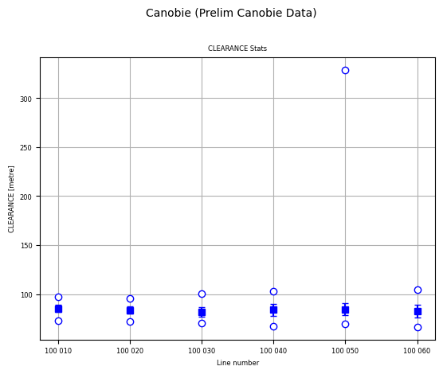
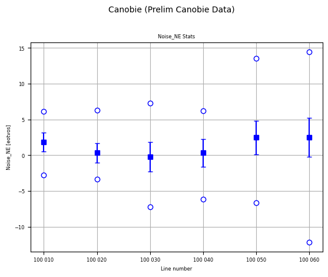
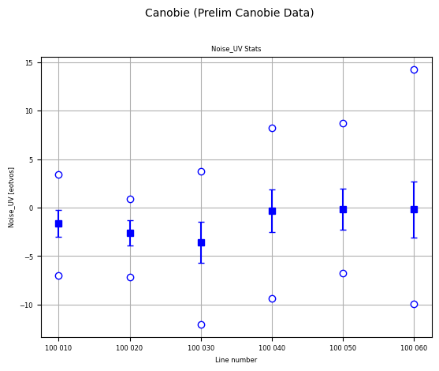
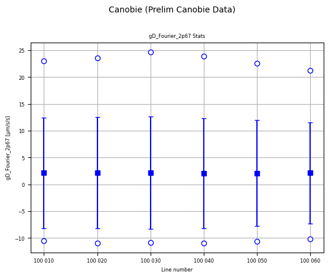

Statistical analyses¶
The general statistical checks available are checkConstantSlope, checkGaps, and allChanStats. The first checks that the data in the requested channels are either constant, or varying at a constant rate. The second checks for gaps in the data channels. The third reports the basic statistics of every channel for every flight-line.
Here we demonstrate their use on the Canobie airborne gravity gradiometer survey data.
Ensure you have run the Prepare_XYZ notebook first so that the Canobie data are prepared for review.
First, import the required modules, and set the path to the geowhizz files.
from pathlib import Path
import galileoQC as qc
canobieHDF_file = Path(r'./CanobieData/Canobie.hdf5')
Some channels in the data are expected to either remain constant, or vary uniformly with sampling along the survey line. Obvious examples are channels containing the date, line number, flight number, project number and so forth which should be constant; and channels containing the time or fiducial which should vary uniformly.
Errors in these channels are usually trivial and minor but nevertheless require fixing when they occur.
A common reported fault is when a channel containing the local time of day in seconds past midnight fails to be of constant slope at or very near the value of 86400.0. That value corresponds to midnight and, since the time of day resets to 0.0 at midnight, the slope will dramatically change. The cause is usually that the clock is not set to local time (since the survey flights do not take place at night).
checkConstantSlope uses first differences along each survey line to check that the requested channels are either of constant value, or vary at a fixed rate along each flight-line.
You can choose the channels to check from those listed by reportChannels or reportWhizz.
The cell below shows the channels selected from the Canobie data. In this case, only the two time channels are occasionally failing this check. The differences are less than \(1\,msec\) which is the precision of the text-formatted input data so these errors are caused simply by the limited precision of the data and are clearly acceptable.
qc.checkConstantSlope(
canobieHDF_file, channels=[
'Date', 'FIDUCIAL', 'FLIGHT', 'LINE', 'Time_Day', 'JOB_ID','Time_1980'])
---------------------------------------------------------------------------
FileNotFoundError Traceback (most recent call last)
Cell In[3], line 1
----> 1 qc.checkConstantSlope(
2 canobieHDF_file, channels=[
3 'Date', 'FIDUCIAL', 'FLIGHT', 'LINE', 'Time_Day', 'JOB_ID','Time_1980'])
File ~/.local/lib/python3.12/site-packages/galileoQC/qualitycontrol/checkConstantSlope.py:47, in checkConstantSlope(whizzFile, lines, channels)
23 """
24 Checks for constant slope (`np.diff`) in all the given channels of data.
25
(...) 43
44 """
45 filename = str(whizzFile)
---> 47 with h5py.File(filename, 'r') as f:
48 g = f[groupName]['Lines']
49 if channels == []:
File ~/.local/lib/python3.12/site-packages/h5py/_hl/files.py:555, in File.__init__(self, name, mode, driver, libver, userblock_size, swmr, rdcc_nslots, rdcc_nbytes, rdcc_w0, track_order, fs_strategy, fs_persist, fs_threshold, fs_page_size, page_buf_size, min_meta_keep, min_raw_keep, locking, alignment_threshold, alignment_interval, meta_block_size, track_times, **kwds)
546 fapl = make_fapl(driver, libver, rdcc_nslots, rdcc_nbytes, rdcc_w0,
547 locking, page_buf_size, min_meta_keep, min_raw_keep,
548 alignment_threshold=alignment_threshold,
549 alignment_interval=alignment_interval,
550 meta_block_size=meta_block_size,
551 **kwds)
552 fcpl = make_fcpl(track_order=track_order, track_times=track_times,
553 fs_strategy=fs_strategy, fs_persist=fs_persist,
554 fs_threshold=fs_threshold, fs_page_size=fs_page_size)
--> 555 fid = make_fid(name, mode, userblock_size, fapl, fcpl, swmr=swmr)
557 if isinstance(libver, tuple):
558 self._libver = libver
File ~/.local/lib/python3.12/site-packages/h5py/_hl/files.py:232, in make_fid(name, mode, userblock_size, fapl, fcpl, swmr)
230 if swmr:
231 flags |= h5f.ACC_SWMR_READ
--> 232 fid = h5f.open(name, flags, fapl=fapl)
233 elif mode == 'r+':
234 fid = h5f.open(name, h5f.ACC_RDWR, fapl=fapl)
File h5py/_objects.pyx:54, in h5py._objects.with_phil.wrapper()
---> 54 'Could not get source, probably due dynamically evaluated source code.'
File h5py/_objects.pyx:55, in h5py._objects.with_phil.wrapper()
---> 55 'Could not get source, probably due dynamically evaluated source code.'
File h5py/h5f.pyx:106, in h5py.h5f.open()
--> 106 'Could not get source, probably due dynamically evaluated source code.'
FileNotFoundError: [Errno 2] Unable to synchronously open file (unable to open file: name = 'CanobieData/Canobie.hdf5', errno = 2, error message = 'No such file or directory', flags = 0, o_flags = 0)
Occasionally, there are gaps in a data channel. With modern data acquisition technology, gaps due to missing values in measurement are very rare although still possible. Gaps occur in magnetic data when a spike in the data has been removed (these are usually interpolated over) but this is not usually seen in gravity data. Finally, gaps can occur when processed data have been deliberately removed. This usually is in parts of the flight-line outside the survey boundary and when the data are unreliable due to filtering effects at the start or end of a flight-line.
The checkGaps function checks all channels for all flight-lines and reports any gaps found.
qc.checkGaps(canobieHDF_file)
Checking for all gaps in 33 channels on 6 lines.
0 lines failed.
The channel statistics analysis plots the mean, standard deviation and range of every channel as a variation of a “box and whisker plot” for every flight-line.
In the plots, the horizontal axis is flight-line number, and at each flight-line, there are a pair of circles plotted for the minimum and maximum values in the channel for that flight line, the filled solid square is at the mean value, and the small horizontal lines are at one standard deviation above and below the mean.
A lot of information is condensed into these plots. One can just quickly glance at each plot looking for outliers or unexpected results, and checking the vertical scales to ensure that the values are in about the right range.
By default, the allChanStats function creates these statistical analysis plots for every channel in the database. Usually this means a very large number of plots, so here the channels to analyse are explicitly listed (and kept to a small number).
Here the CLEARANCE has an obvious outlier maximum in line 100050. This could be followed up by further analysis, or by enquiring the reason of the acquisition company.
qc.allChanStats(
canobieHDF_file, [
'CLEARANCE', 'Noise_NE', 'Noise_UV', 'gD_Fourier_2p67'
])



